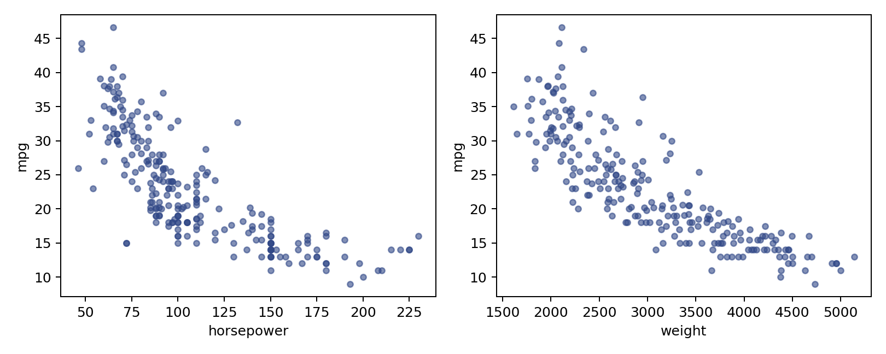

代码 2.4-07 · 观察训练数据的关系
按Notebook顺序运行。后续代码依赖前面定义的变量。真实数据来自教材官网。
逐步读代码
subplots(1,2)创建一行两张图，axes是一维绘图区数组。zip(axes,feature_columns)把第一个图区配马力、第二个配重量。- 循环每轮将一对对象解包给
ax, feature；X_train[feature]取当前输入列，y_train提供纵坐标。 s=17控制点面积，alpha=0.6让重叠点更容易辨认；轴名随当前特征改变。循环之后才对整张图调整布局、保存、显示并关闭。

下载已执行Notebook · 返回项目目录